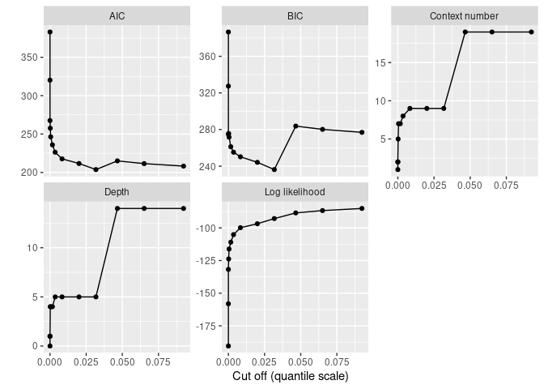

mixvlmc implements variable length Markov chains (VLMC) and variable length Markov chains with covariates (COVLMC), as described in:
- Bühlmann, P. and Wyner, A. J. (1999), Variable length Markov chains. Ann. Statist. 27 (2) 480-513
- Zanin Zambom, A., Kim, S. and Lopes Garcia, N. (2022), Variable length Markov chain with exogenous covariates. J. Time Ser. Anal., 43 (2) 312-328
mixvlmc includes functionalities similar to the ones available in VLMC and PST. The main advantages of mixvlmc are the support of time varying covariates with COVLMC and the introduction of post-pruning of the models that enables fast model selection via information criteria.
Installation
The package can be installed from CRAN with:
install.packages("mixvlmc")The development version is available from GitHub:
# install.packages("devtools")
devtools::install_github("fabrice-rossi/mixvlmc")Usage
Variable length Markov chains
Variable length Markov chains (VLMC) are sparse high order Markov chains. They can be used to model time series (sequences) with discrete values (states) with a mix of small order dependencies for certain states and higher order dependencies for other states. For instance, with a binary time series, the probability of observing 1 at time t could be constant whatever the older past states if the last one (at time t − 1) was 1, but could depend on states at time t − 3 and t − 2 if the state was 0 at time t − 1. A collection of past states that determines completely the transition probabilities is a context of the VLMC. Read vignette("context-trees") for details about contexts and context tree, and see vignette("variable-length-markov-chains") for a more detailed introduction to VLMC.
VLMC with covariates (COVLMC) are extension of VLMC in which transition probabilities (probabilities of the next state given the past) can be influenced by the past values of some covariates (in addition to the past values of the time series itself). Each context is associated to a logistic model that maps the (past values of the) covariates to transition probabilities.
Fitting a VLMC
The package is loaded in a standard way.
library(mixvlmc)
## we use ggplot2 for graphics but this is not a dependency of the package
library(ggplot2)The main function of VLMC is vlmc() which can be called on a time series represented by a numerical vector or a factor, for instance.
set.seed(0)
x <- sample(c(0L, 1L), 200, replace = TRUE)
model <- vlmc(x)
model
#> VLMC context tree on 0, 1
#> cutoff: 1.921 (quantile: 0.05)
#> Number of contexts: 11
#> Maximum context length: 6The default parameters of vlmc() will tend to produce overly complex VLMC in order to avoid missing potential structure in the time series. In the example above, we expect the optimal VLMC to be a constant distribution as the sample is independent and uniformly distributed (it has no temporal structure). The default parameters give here an overly complex model, as illustrated by its text based representation
draw(model)
#> * (0.505, 0.495)
#> '-- 1 (0.4848, 0.5152)
#> +-- 0 (0.5319, 0.4681)
#> | '-- 1 (0.5, 0.5)
#> | '-- 0 (0.4444, 0.5556)
#> | '-- 0 (0.4286, 0.5714)
#> | +-- 0 (1, 0)
#> | '-- 1 (0, 1)
#> '-- 1 (0.4314, 0.5686)
#> '-- 0 (0.2727, 0.7273)
#> '-- 0 (0.3846, 0.6154)
#> '-- 0 (0.5, 0.5)
#> +-- 0 (0, 1)
#> '-- 1 (1, 0)The representation uses simple ASCII art to display the contexts of the VLMC organized into a tree (see vignette("context-trees") for a more detailed introduction):
- the root
*corresponds to an empty context; - one can read contexts by following branches (represented by 2 dashes
--) down to their ends (the leaves): for instance (1,0,1,0,0,0) is one of the contexts of the tree.
Here the context (1,0,1,0,0,0) is associated to the transition probabilities (1,0). This means that when one observes this context in the time series, it is always followed by a 0. Notice that contexts are traditionally written from the most recent value to the oldest one. Thus, the context (1,0,1,0,0,0) corresponds to the sub time series (0,0,0,1,0,1).
BIC based model selection
The VLMC above is obviously overfitting to the time series, as illustrated by the 0/1 transition probabilities. A classical way to select a good model is to minimize the BIC. In mixvlmc this can be done easily using using ‘tune_vlmc()’ which fits first a complex VLMC and then prunes it (using a combination of cutoff() and prune()), as follows (see vignette("variable-length-markov-chains") for details):
best_model_tune <- tune_vlmc(x)
best_model <- as_vlmc(best_model_tune)
draw(best_model)
#> * (0.505, 0.495)As expected, we end up with a constant model.
In time series with actual temporal patterns, the optimal model will be more complex. As a very basic illustrative example, let us consider the sunspot.year time series and turn it into a binary one, with high activity associated to a number of sun spots larger than the median number.
We adjust automatically an optimal VLMC as follows:
sun_model_tune <- tune_vlmc(sun_activity)
sun_model_tune
#> VLMC context tree on high, low
#> cutoff: 3.481 (quantile: 0.0083243263138364)
#> Number of contexts: 9
#> Maximum context length: 5
#> Selected by BIC (244.0594)The results of the pruning process can be represented graphically:
ggplot(sun_model_tune$results, aes(x = alpha, y = BIC)) +
geom_line() +
geom_point()
The plot shows that simpler models are too simple as the BIC increases when pruning becomes strong enough. The best model remains rather complex (as expected based on the periodicity of the Solar cycle):
best_sun_model <- as_vlmc(sun_model_tune)
draw(best_sun_model)
#> * (0.5052, 0.4948)
#> +-- high (0.8207, 0.1793)
#> | '-- high (0.7899, 0.2101)
#> | '-- high (0.7447, 0.2553)
#> | +-- high (0.6571, 0.3429)
#> | | '-- low (0.9167, 0.08333)
#> | '-- low (1, 0)
#> '-- low (0.1888, 0.8112)
#> +-- high (0, 1)
#> '-- low (0.2328, 0.7672)
#> +-- high (0, 1)
#> '-- low (0.3034, 0.6966)
#> '-- high (0.07692, 0.9231)Fitting a VLMC with covariates
To illustrate the use of covariates, we use the power consumption data set included in the package (see vignette("covlmc") for details). We consider a week of electricity usage as follows:
pc_week_5 <- powerconsumption[powerconsumption$week == 5, ]
elec <- pc_week_5$active_power
ggplot(pc_week_5, aes(x = date_time, y = active_power)) +
geom_line() +
xlab("Date") +
ylab("Activer power (kW)")The time series displays some typical patterns of electricity usage:
- low active power at night (typically below 0.4 kW);
- standard use between 0.4 and 2 kW;
- peak use above 2 kW.
We build a discrete time series from those (somewhat arbitrary) thresholds:
The best VLMC model is quite simple. It is almost a standard order one Markov chain, up to the order 2 context used when the active power is typical.
elec_vlmc_tune <- tune_vlmc(elec_dts)
best_elec_vlmc <- as_vlmc(elec_vlmc_tune)
draw(best_elec_vlmc)
#> * (0.1667, 0.5496, 0.2837)
#> +-- low (0.7665, 0.2335, 0)
#> '-- typical (0.0704, 0.8466, 0.08303)
#> | '-- low (0.3846, 0.5385, 0.07692)
#> '-- high (0.003497, 0.1573, 0.8392)As pointed about above, low active power tend to correspond to night phase. We can include this information by introducing a day covariate as follows:
elec_cov <- data.frame(day = (pc_week_5$hour >= 7 & pc_week_5$hour <= 17))A COVLMC is estimated using the covlmc function:
elec_covlmc <- covlmc(elec_dts, elec_cov, min_size = 2, alpha = 0.5)
draw(elec_covlmc, time_sep = " | ", model = "full", p_value = FALSE)
#> *
#> +-- low ([ (I) | day_1TRUE
#> | -1.558 | 1.006 ])
#> '-- typical
#> | +-- low ([ (I) | day_1TRUE | day_2TRUE
#> | | 0.3567 | -27.81 | 27.81
#> | | -1.253 | -14.39 | 13.69 ])
#> | '-- typical ([ (I) | day_1TRUE
#> | | 2.666 | 0.566
#> | | 0.2683 | 0.2426 ])
#> | '-- high ([ (I) | day_1TRUE
#> | 2.015 | 16.18
#> | 0.6931 | 16.61 ])
#> '-- high ([ (I) | day_1TRUE
#> 17.41 | -14.23
#> 19.38 | -14.88 ])The model appears a bit complex. To get a more adapted model, we use a BIC based model selection as follows:
elec_covlmc_tune <- tune_covlmc(elec_dts, elec_cov)
best_elec_covlmc <- as_covlmc(elec_covlmc_tune)
draw(best_elec_covlmc, model = "full", time_sep = " | ", p_value = FALSE)
#> *
#> +-- low ([ (I) | day_1TRUE
#> | -1.558 | 1.006 ])
#> '-- typical
#> | +-- low ([ (I)
#> | | 0.3365
#> | | -1.609 ])
#> | '-- typical ([ (I)
#> | | 2.937
#> | | 0.3747 ])
#> | '-- high ([ (I)
#> | 2.773
#> | 1.705 ])
#> '-- high ([ (I)
#> 3.807
#> 5.481 ])As in the VLMC case, the optimal model remains rather simple:
- the high context do not use the covariate and is equivalent to the vlmc context;
- the low context is more interesting: it does not switch to a high context (hence the single row of parameters) but uses the covariate. As expected, the probability of switching from low to typical is larger during the day;
- the typical context is described in a more complex way that in the case of the vlmc as the transition probabilities depend on the previous state.
Sampling
VLMC models can also be used to sample new time series as in the VMLC bootstrap proposed by Bühlmann and Wyner. For instance, we can estimate the longest time period spent in the high active power regime. In this “predictive” setting, the AIC may be more adapted to select the best model. Notice that some quantities can be computed directly from the model in the VLMC case, using classical results on Markov Chains. See vignette("sampling") for details on sampling.
We first select two models based on the AIC.
best_elec_vlmc_aic <- as_vlmc(tune_vlmc(elec_dts, criterion = "AIC"))
best_elec_covlmc_aic <- as_covlmc(tune_covlmc(elec_dts, elec_cov, criterion = "AIC"))The we sample 100 new time series for each model, using the simulate() function as follows:
set.seed(0)
vlmc_simul <- vector(mode = "list", 100)
for (k in seq_along(vlmc_simul)) {
vlmc_simul[[k]] <- simulate(best_elec_vlmc_aic, nsim = length(elec_dts), init = elec_dts[1:2])
}
set.seed(0)
covlmc_simul <- vector(mode = "list", 100)
for (k in seq_along(covlmc_simul)) {
covlmc_simul[[k]] <- simulate(best_elec_covlmc_aic, nsim = length(elec_dts), covariate = elec_cov, init = elec_dts[1:2])
}Then statistics can be computed on those time series. For instance, we look for the longest time period spent in the high active power regime.
longuest_high <- function(x) {
high_length <- rle(x == "high")
10 * max(high_length$lengths[high_length$values])
}
lh_vlmc <- sapply(vlmc_simul, longuest_high)
lh_covlmc <- sapply(covlmc_simul, longuest_high)The average longest time spent in high consecutively is
- for the VLMC: 243.6 minutes with a standard error of 6.7337834;
- for the VLMC with covariate: 286.2 minutes with a standard error of 8.9157448;
- 410 minutes for the observed time series.
The following figure shows the distributions of the times obtained by both models as well as the observed value. The VLMC model with covariate is able to generate longer sequences in the high active power state than the bare VLMC model as the consequence of the sensitivity to the day/night schedule.
lh <- data.frame(
time = c(lh_vlmc, lh_covlmc),
model = c(rep("VLMC", length(lh_vlmc)), rep("COVLMC", length(lh_covlmc)))
)
ggplot(lh, aes(x = time, color = model)) +
geom_density() +
geom_rug(alpha = 0.5) +
geom_vline(xintercept = longuest_high(elec_dts), color = 3)The VLMC with covariate can be used to investigate the effects of changes in those covariates. For instance, if the day time is longer, we expect high power usage to be less frequent. For instance, we simulate one week with a day time from 6:00 to 20:00 as follows.
elec_cov_long_days <- data.frame(day = (pc_week_5$hour >= 6 & pc_week_5$hour <= 20))
set.seed(0)
covlmc_simul_ld <- vector(mode = "list", 100)
for (k in seq_along(covlmc_simul_ld)) {
covlmc_simul_ld[[k]] <- simulate(best_elec_covlmc_aic, nsim = length(elec_dts), covariate = elec_cov_long_days, init = elec_dts[1:2])
}As expected the distribution of the longest time spend consecutively in high power usage is shifted to lower values when the day length is increased.
lh_covlmc_ld <- sapply(covlmc_simul_ld, longuest_high)
day_time_effect <- data.frame(
time = c(lh_covlmc, lh_covlmc_ld),
`day length` = c(rep("Short days", length(lh_covlmc)), rep("Long days", length(lh_covlmc_ld))),
check.names = FALSE
)
ggplot(day_time_effect, aes(x = time, color = `day length`)) +
geom_density() +
geom_rug(alpha = 0.5)